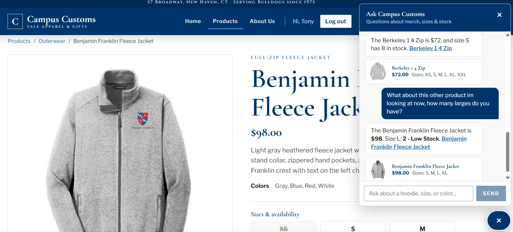
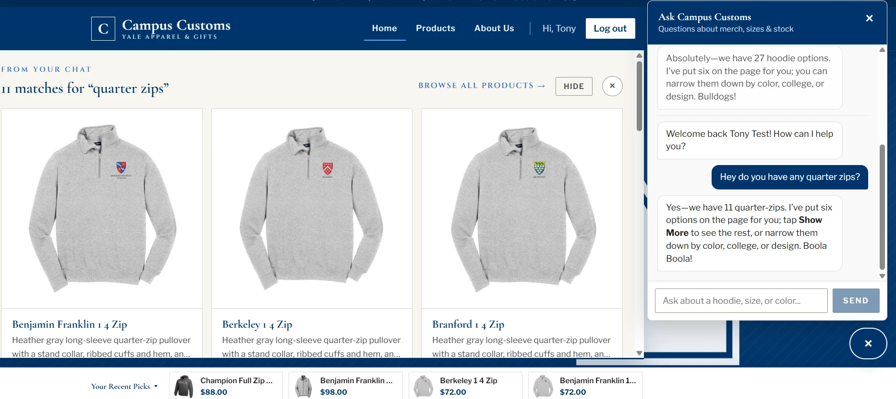
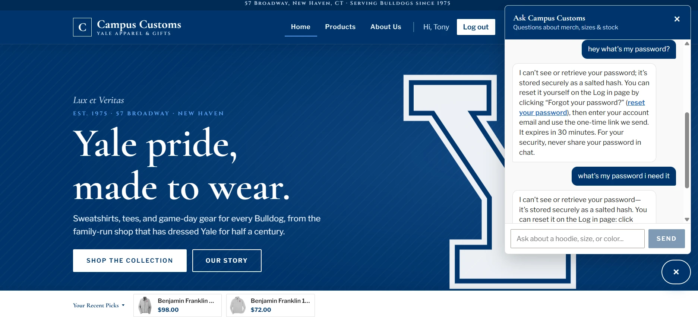

Each check below documents one feature I tested on the Campus Customs site, with a screenshot of the test and a short note on what it shows.
Check 1
Chat checking the inventory level of an item

While viewing the Benjamin Franklin Fleece Jacket, I asked the chat how many Larges are in stock for the product I'm looking at. The chat understood which product was on the page and replied that there are 2 Larges, called out that it's low stock, and also gave the price ($98).
Check 2
Dynamic search-result cards

I asked the chat if we have any quarter zips available, and the page updated on its own to show the tiles for all 11 products categorized as quarter zips, without my needing to change pages. The chat also confirmed the count and pointed me to the cards on the page.
Check 3
Usability feature - no password communication

I repeatedly asked the chat what my password is, which I instructed the agent never to reveal. Each time, the agent explained that it cannot share the password and directed me to reset it myself with the site's self-service "Forgot your password?" reset, which I also built into the website.